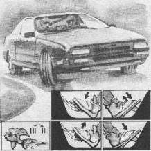

Повышение тяги двигателя для действий в критических ситуациях
Многие молодые водители относятся к “перегазовке” (если они знают, что это такое) с пренебрежением, считая ее наследием “древних” автомобилей, на которых из-за отсутствия синхронизаторов в коробке передач понижающую передачу можно было включить бесшумно, дважды выжав педаль сцепления и выровняв предварительно обороты включающихся шестерен с помощью дросселирования (“перегазовки”). Однако смысл “перегазовки” не потерялся и на современных быстроходных автомобилях, особенно в плане повышения безопасности в критических ситуациях за счет использования мощности двигателя.
По поводу мощности своих двигателей некоторые владельцы “Волг”, “Лад”, “Самар” и других моделей автомобилей глубоко заблуждаются, полагая, что тот показатель, который записан в инструкции по эксплуатации, можно использовать в любое мгновение дорожной ситуации. Однако в той же инструкции указано, что максимальная мощность двигателя соответствует максимальной частоте вращения коленчатого вала. Это значит, что если водитель, двигаясь на подъем на невысокой скорости и прямой передаче, пытается быстро выполнить обгон или другой маневр, он не должен забывать, что эту “паспортную” мощность он давно потерял и двигатель не сможет его выручить, если даже он полностью “откроет газ”.
Есть еще одна характеристика двигателя, которую должен знать и использовать любой водитель. Это крутящий момент, или максимальная тяга двигателя. Она достигается при определенной частоте вращения коленчатого вала. Так, для двигателей семейства ВАЗ это приблизительно 4000 об/мин. В технической характеристике любого автомобиля указан этот показатель.
Для тех, кто не хочет перегружать память излишком технической информации, нужно отметить, что преодолеть многие критические ситуации легче всего в зоне частоты вращения коленчатого вала выше или соответствующих максимальному крутящему моменту двигателя. Тогда двигатель быстро реагирует на нажатие педали подачи топлива. При уменьшении частоты вращения резкое дросселирование не дает мгновенного эффекта. А так как сегодня “экономная” езда стала очень актуальной из-за повышения цен на бензин, то чаще всего водитель попадает в критическую ситуацию, имея небольшой шанс спасти себя за счет мощности двигателя.
Итак, чтобы быть готовым к экстренным действиям, нужно сделать для себя два существенных вывода:
– запас мощности поможет преодолеть критическую ситуацию. Создать его желательно до экстренных действий;
– инерция двигателя зависит в определенной степени от водителя. Уменьшить его позволит режим максимального крутящего момента двигателя.
Повысить мощность двигателя до необходимого уровня помогают следующие приемы.
Стандартная “перегазовка” перед включением понижающей передачи. Применяется перед входом в поворот, при комбинированном торможении, на подъеме, перед обгоном. Последовательность действий (см. рисунок):
– выключить сцепление;
– резко “открыть” и “закрыть газ”, доведя частоту вращения коленчатого вала двигателя до значений, соответствующих максимальному крутящему моменту, плюс запас 1000–1500 об/мин, которые будут потеряны во время включения передачи;
– включить понижающую передачу во время “перегазовки”;
– включить сцепление;
– “открыть газ”.
“Перегазовка” на нейтральной передаче.Применяется при существенной потере мощности перед интенсивным разгоном и включением понижающей передачи с пропуском, например V–II. Последовательность действий:
– “закрыть газ”;
– выключить сцепление; включить нейтральную передачу;
– “открыть газ” и довести частоту вращения коленчатого вала двигателя до значений, соответствующих максимальному крутящему моменту, плюс запас 1000–1500 об/мин на потери при включении понижающей передачи;
– включить понижающую передачу;
– “открыть газ”.

Сделать двигатель более динамичным и создать запас мощности для преодоления сложных ситуаций вам поможет “перегазовка” перед включением понижающей передачи.
В зависимости от лимита времени можно использовать “перегазовку”:
на нейтральной передаче
при выжатом сцеплении
при полувыжатом сцеплении
“Перегазовка” с двойным выжимом сцепления.
Применяется при дефектах коробки передач (повреждении синхронизаторов), переключении передачи на скользкой дороге, включении понижающей передачи с пропуском двух циклов включения. Последовательность действий:
– “закрыть газ”;
– выключить сцепление;
– “открыть газ” и довести обороты до режима, близкого к максимальным;
– “закрыть газ”;
– выключить сцепление;
– включить понижающую передачу;
– “открыть газ”.
“Догазовка” при включении повышающей передачи.
Применяется для компенсации потери оборотов из-за длительной паузы при включении повышающей передачи, а также при включении передачи с пропуском одного цикла включения, например, I–III или II–IV. Последовательность действий:
– выключить сцепление;
– включить нейтральную передачу;
– резко, но дозированно “открыть-закрыть газ”;
– включить повышающую передачу;
– “открыть газ”.
Скоростная “перегазовка” с пробуксовкой сцепления и включением понижающей передачи ударным способом.
Применяется в экстремальных ситуациях при остром лимите времени. Выполняется этот прием следующим образом. Как только двигатель начинает терять обороты, а еще лучше до того, как это произойдет, водитель, удерживая дроссель открытым, выключает сцепление с задержкой, т. е. замедленно. Двигатель быстро наращивает обороты, и в этот момент включаются понижающая передача и сцепление. Задержка выключения сцепления приводит к его пробуксовке и позволяет поднять частоту вращения до любого уровня за короткое время.
Пробуксовка сцепления на постоянной передаче.
Может применяться как разовый импульс повышения мощности, когда нет времени для включения понижающей передачи, например при преодолении вершины крутого подъема, участка сыпучего или грязного грунта, снежной целины. На короткое время (0,1–0,3 с) не полностью выключается и включается сцепление, что позволяет приобрести дополнительно 300–500 оборотов и некоторое ускорение автомобиля.
Перечисленные выше приемы имеют очень широкий спектр применения от стандартных дорожных ситуаций до критических. С одной стороны, они предназначены для создания надежной тяги двигателя, позволяющей уменьшить остроту критических ситуаций, а с другой, способствуют повышению устойчивости и управляемости автомобиля за счет использования антиблокировочного эффекта при экстренном торможении.